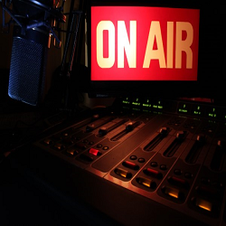
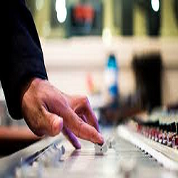
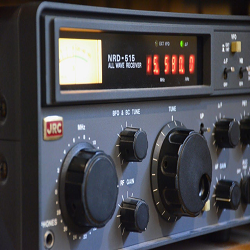
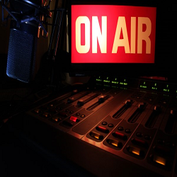
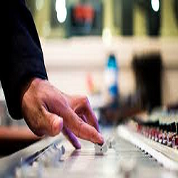
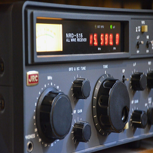

A Brief History of Emaar FM
Established in 2018, Emaar FM is licensed by the Syrian Ministry as spacialized local radio FM station and operates as a service of a civil society Communication. The station is committed to supporting civic and cultural life in Southren Syria through daily news coverage, high-quality documentary production, and exceptional music programming that reflects the culture of Southren side of Syria. Emaar FM educate and foster a more civil society, and provides public radio service to Southren Syria via 96.5 FM in As Suwayda and globally through http://www.emaarradio.com/.
Emaar FM reflect every side of this diverse, creative community – from the weird to the refined. We’re committed to delivering in-depth news coverage through a local lens. And we’re devoted to diverse, intelligent explorations in local music, lifestyle and culture.
 




